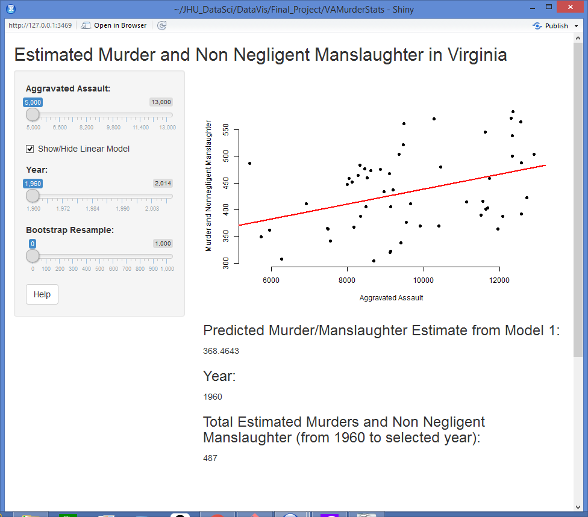
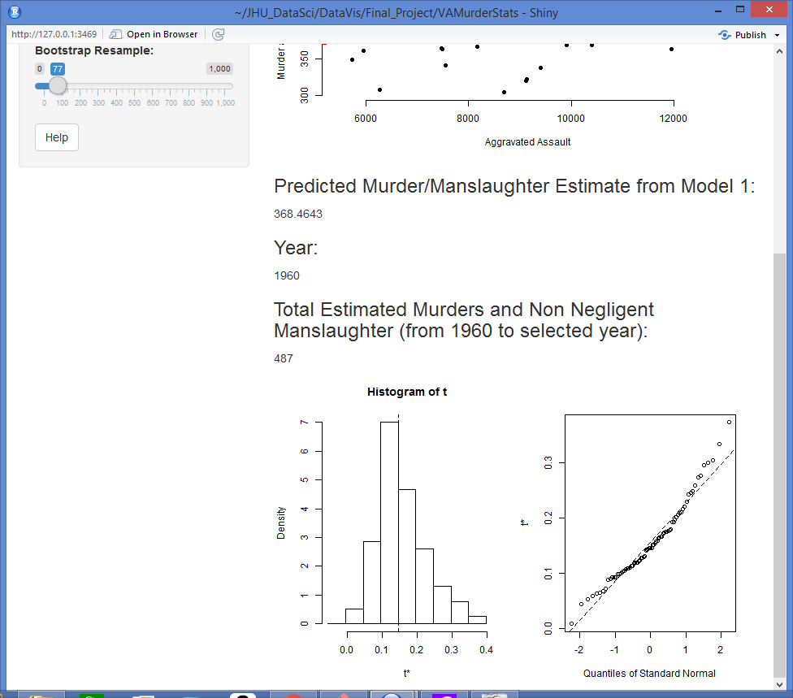

Estimated Murder and Non Negligent Manslaughter in Virginia Shiny App Help
The data used in this application was obtained from the Uniform Crime Reporting Statistics - UCR Data Online database (http://www.ucrdatatool.gov/).
Use the slider for Aggravated Assault to run a linear model and predict the Estimated Murder/Manslaughter value. The predicted value associated with the model will appear under the plot. The Show/Hide Linear Model checkbox is also available to show or remove the linear model line in the plot.

The Year slider can be used to calculate a cumulative sum of the estimated murder and non negligent manslaughter values from the year 1960 to the selected year.
The final slider allows the user to bootstrap resample the original data by the value in the slider. Once activated, a t distribution histogram appears at the bottom of the window. These plots depict the variance in the data. In this case, we are using the linear model with the predictor being Aggravated Assault, as in the above plot.
